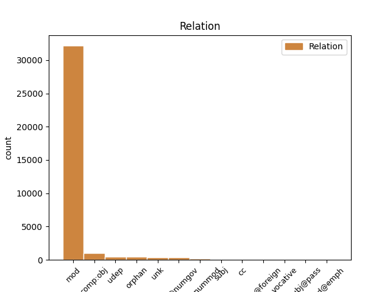

Distribution of features within this leaf


Agreement Rules sorted by frequency.
- When the dependent token is the modifer(mod) of the head token, and the head token is NOUN and the dependent token is NOUN.
1 Naproti _ _ _ _ 0 _ _ _
2 tomu _ _ _ _ 0 _ _ _
3 prvky _ _ _ _ 0 _ _ _
4 , _ _ _ _ 0 _ _ _
5 kterým _ _ _ _ 0 _ _ _
6 chybí _ _ _ _ 0 _ _ _
7 jeden _ _ _ _ 0 _ _ _
8 obvodový _ _ _ _ 0 _ _ _
9 elektron _ _ _ _ 0 _ _ _
10 do _ _ _ _ 0 _ _ _
11 úplného _ _ _ _ 0 _ _ _
12 obsazení obsazení NOUN NNNS2-----A---- Case=Gen|Gender=Neut|Number=Sing|Polarity=Pos 0 _ _ _
13 krajní _ _ _ _ 0 _ _ _
14 slupky slupka NOUN NNFS2-----A---- Case=Gen|Gender=Fem|Number=Sing|Polarity=Pos 12 mod _ _
15 a _ _ _ _ 0 _ _ _
16 tvoří _ _ _ _ 0 _ _ _
17 jednomocné _ _ _ _ 0 _ _ _
18 záporné _ _ _ _ 0 _ _ _
19 ionty _ _ _ _ 0 _ _ _
20 a _ _ _ _ 0 _ _ _
21 vznikající _ _ _ _ 0 _ _ _
22 připoutáním _ _ _ _ 0 _ _ _
23 dalšího _ _ _ _ 0 _ _ _
24 elektronu _ _ _ _ 0 _ _ _
25 . _ _ _ _ 0 _ _ _
1 Newton _ _ _ _ 0 _ _ _
2 se _ _ _ _ 0 _ _ _
3 domnívá _ _ _ _ 0 _ _ _
4 , _ _ _ _ 0 _ _ _
5 že _ _ _ _ 0 _ _ _
6 zde _ _ _ _ 0 _ _ _
7 hrají _ _ _ _ 0 _ _ _
8 roli _ _ _ _ 0 _ _ _
9 vliv _ _ _ _ 0 _ _ _
10 okolních _ _ _ _ 0 _ _ _
11 polí _ _ _ _ 0 _ _ _
12 na _ _ _ _ 0 _ _ _
13 zemský _ _ _ _ 0 _ _ _
14 magnetismus _ _ _ _ 0 _ _ _
15 a _ _ _ _ 0 _ _ _
16 změny _ _ _ _ 0 _ _ _
17 rotačních _ _ _ _ 0 _ _ _
18 vlastností _ _ _ _ 0 _ _ _
19 momentu _ _ _ _ 0 _ _ _
20 setrvačnosti setrvačnost NOUN NNFS2-----A---- Case=Gen|Gender=Fem|Number=Sing|Polarity=Pos 0 _ _ _
21 Země Země PROPN NNFS2-----A---- Case=Gen|Gender=Fem|NameType=Geo|Number=Sing|Polarity=Pos 20 mod _ _
22 v _ _ _ _ 0 _ _ _
23 důsledku _ _ _ _ 0 _ _ _
24 kolísání _ _ _ _ 0 _ _ _
25 teplot _ _ _ _ 0 _ _ _
26 . _ _ _ _ 0 _ _ _
1 Kopal _ _ _ _ 0 _ _ _
2 se _ _ _ _ 0 _ _ _
3 v _ _ _ _ 0 _ _ _
4 několika několik DET Ca--6---------- Case=Loc|NumType=Card|PronType=Ind 6 det@nummod _ _
5 podrobných _ _ _ _ 0 _ _ _
6 pracích práce NOUN NNFP6-----A---- Case=Loc|Gender=Fem|Number=Plur|Polarity=Pos 0 _ _ _
7 zabýval _ _ _ _ 0 _ _ _
8 vlivem _ _ _ _ 0 _ _ _
9 viskózního _ _ _ _ 0 _ _ _
10 tření _ _ _ _ 0 _ _ _
11 na _ _ _ _ 0 _ _ _
12 pracích _ _ _ _ 0 _ _ _
13 a _ _ _ _ 0 _ _ _
14 nutaci _ _ _ _ 0 _ _ _
15 nebeských _ _ _ _ 0 _ _ _
16 těles _ _ _ _ 0 _ _ _
17 . _ _ _ _ 0 _ _ _
1 Hlavní _ _ _ _ 0 _ _ _
2 kvantové _ _ _ _ 0 _ _ _
3 číslo _ _ _ _ 0 _ _ _
4 stanoví _ _ _ _ 0 _ _ _
5 celý _ _ _ _ 0 _ _ _
6 počet _ _ _ _ 0 _ _ _
7 kvant _ _ _ _ 0 _ _ _
8 dané _ _ _ _ 0 _ _ _
9 dráhy _ _ _ _ 0 _ _ _
10 , _ _ _ _ 0 _ _ _
11 vedlejší _ _ _ _ 0 _ _ _
12 kvantové _ _ _ _ 0 _ _ _
13 číslo číslo NOUN NNNS1-----A---- Case=Nom|Gender=Neut|Number=Sing|Polarity=Pos 0 _ _ _
14 počet _ _ _ _ 0 _ _ _
15 jejich _ _ _ _ 0 _ _ _
16 magnetonů _ _ _ _ 0 _ _ _
17 , _ _ _ _ 0 _ _ _
18 magnetické _ _ _ _ 0 _ _ _
19 kvantové _ _ _ _ 0 _ _ _
20 číslo číslo NOUN NNNS1-----A---- Case=Nom|Gender=Neut|Number=Sing|Polarity=Pos 13 orphan _ _
21 složku _ _ _ _ 0 _ _ _
22 magnetického _ _ _ _ 0 _ _ _
23 momentu _ _ _ _ 0 _ _ _
24 do _ _ _ _ 0 _ _ _
25 osy _ _ _ _ 0 _ _ _
26 atomu _ _ _ _ 0 _ _ _
27 , _ _ _ _ 0 _ _ _
28 a _ _ _ _ 0 _ _ _
29 tudíž _ _ _ _ 0 _ _ _
30 polohu _ _ _ _ 0 _ _ _
31 elektronové _ _ _ _ 0 _ _ _
32 dráhy _ _ _ _ 0 _ _ _
33 v _ _ _ _ 0 _ _ _
34 prostoru _ _ _ _ 0 _ _ _
35 . _ _ _ _ 0 _ _ _
1 Tento _ _ _ _ 0 _ _ _
2 výraz _ _ _ _ 0 _ _ _
3 je _ _ _ _ 0 _ _ _
4 zatížen _ _ _ _ 0 _ _ _
5 chybou _ _ _ _ 0 _ _ _
6 závislou _ _ _ _ 0 _ _ _
7 na _ _ _ _ 0 _ _ _
8 * _ _ _ _ 0 _ _ _
9 a _ _ _ _ 0 _ _ _
10 * _ _ _ _ 0 _ _ _
11 , _ _ _ _ 0 _ _ _
12 která _ _ _ _ 0 _ _ _
13 je _ _ _ _ 0 _ _ _
14 shodná _ _ _ _ 0 _ _ _
15 s _ _ _ _ 0 _ _ _
16 chybou _ _ _ _ 0 _ _ _
17 v _ _ _ _ 0 _ _ _
18 části _ _ _ _ 0 _ _ _
19 * _ _ _ _ 0 _ _ _
20 danou daný ADJ AAFS7----1A---- Case=Ins|Degree=Pos|Gender=Fem|Number=Sing|Polarity=Pos 0 _ _ _
21 rozdílem rozdíl NOUN NNIS7-----A---- Animacy=Inan|Case=Ins|Gender=Masc|Number=Sing|Polarity=Pos 20 comp:obj _ _
22 mezi _ _ _ _ 0 _ _ _
23 skutečným _ _ _ _ 0 _ _ _
24 * _ _ _ _ 0 _ _ _
25 a _ _ _ _ 0 _ _ _
26 hodnotou _ _ _ _ 0 _ _ _
27 vypočítanou _ _ _ _ 0 _ _ _
28 . _ _ _ _ 0 _ _ _
1 Je _ _ _ _ 0 _ _ _
2 hybnost hybnost NOUN NNFS1-----A---- Case=Nom|Gender=Fem|Number=Sing|Polarity=Pos 0 _ _ _
3 elektronu _ _ _ _ 0 _ _ _
4 moment moment NOUN NNIS1-----A---- Animacy=Inan|Case=Nom|Gender=Masc|Number=Sing|Polarity=Pos 2 unk _ _
5 hybnosti _ _ _ _ 0 _ _ _
6 vzhledem _ _ _ _ 0 _ _ _
7 ke _ _ _ _ 0 _ _ _
8 středu _ _ _ _ 0 _ _ _
9 atomového _ _ _ _ 0 _ _ _
10 jádra _ _ _ _ 0 _ _ _
11 . _ _ _ _ 0 _ _ _
1 Mimo _ _ _ _ 0 _ _ _
2 plných _ _ _ _ 0 _ _ _
3 cihel _ _ _ _ 0 _ _ _
4 se _ _ _ _ 0 _ _ _
5 vyrábějí _ _ _ _ 0 _ _ _
6 příčně _ _ _ _ 0 _ _ _
7 děrované _ _ _ _ 0 _ _ _
8 cihly _ _ _ _ 0 _ _ _
9 formátu _ _ _ _ 0 _ _ _
10 # _ _ _ _ 0 _ _ _
11 * _ _ _ _ 0 _ _ _
12 s _ _ _ _ 0 _ _ _
13 otvory _ _ _ _ 0 _ _ _
14 procházejícími procházející ADJ AGIP7-----A---- Animacy=Inan|Aspect=Imp|Case=Ins|Gender=Masc|Number=Plur|Polarity=Pos|Tense=Pres|VerbForm=Part|Voice=Act 0 _ _ _
15 svisle _ _ _ _ 0 _ _ _
16 celou _ _ _ _ 0 _ _ _
17 výškou výška NOUN NNFS7-----A---- Case=Ins|Gender=Fem|Number=Sing|Polarity=Pos 14 udep _ _
18 a _ _ _ _ 0 _ _ _
19 cihly _ _ _ _ 0 _ _ _
20 lehčené _ _ _ _ 0 _ _ _
21 , _ _ _ _ 0 _ _ _
22 příčně _ _ _ _ 0 _ _ _
23 nebo _ _ _ _ 0 _ _ _
24 podélně _ _ _ _ 0 _ _ _
25 děrované _ _ _ _ 0 _ _ _
26 . _ _ _ _ 0 _ _ _
1 Korekce korekce NOUN NNFS1-----A---- Case=Nom|Gender=Fem|Number=Sing|Polarity=Pos 0 _ _ _
2 chyb _ _ _ _ 0 _ _ _
3 , _ _ _ _ 0 _ _ _
4 které _ _ _ _ 0 _ _ _
5 vznikly _ _ _ _ 0 _ _ _
6 nepřesnostmi _ _ _ _ 0 _ _ _
7 při _ _ _ _ 0 _ _ _
8 odvození _ _ _ _ 0 _ _ _
9 , _ _ _ _ 0 _ _ _
10 a _ _ _ _ 0 _ _ _
11 dále _ _ _ _ 0 _ _ _
12 odvození odvození NOUN NNNS1-----A---- Case=Nom|Gender=Neut|Number=Sing|Polarity=Pos 1 subj _ LDeriv=odvodit
13 výrazů _ _ _ _ 0 _ _ _
14 přesnějších _ _ _ _ 0 _ _ _
15 je _ _ _ _ 0 _ _ _
16 předmětem _ _ _ _ 0 _ _ _
17 tohoto _ _ _ _ 0 _ _ _
18 příspěvku _ _ _ _ 0 _ _ _
19 . _ _ _ _ 0 _ _ _
1 Bližší _ _ _ _ 0 _ _ _
2 rozbor _ _ _ _ 0 _ _ _
3 by _ _ _ _ 0 _ _ _
4 se _ _ _ _ 0 _ _ _
5 vymykal _ _ _ _ 0 _ _ _
6 rámci _ _ _ _ 0 _ _ _
7 tohoto _ _ _ _ 0 _ _ _
8 článku _ _ _ _ 0 _ _ _
9 , _ _ _ _ 0 _ _ _
10 proto _ _ _ _ 0 _ _ _
11 zde _ _ _ _ 0 _ _ _
12 uvádím _ _ _ _ 0 _ _ _
13 jen _ _ _ _ 0 _ _ _
14 hlavní _ _ _ _ 0 _ _ _
15 témata _ _ _ _ 0 _ _ _
16 , _ _ _ _ 0 _ _ _
17 planetární _ _ _ _ 0 _ _ _
18 systém _ _ _ _ 0 _ _ _
19 , _ _ _ _ 0 _ _ _
20 naše _ _ _ _ 0 _ _ _
21 sluneční _ _ _ _ 0 _ _ _
22 soustava _ _ _ _ 0 _ _ _
23 , _ _ _ _ 0 _ _ _
24 úvod _ _ _ _ 0 _ _ _
25 do _ _ _ _ 0 _ _ _
26 astronomie _ _ _ _ 0 _ _ _
27 # _ _ _ _ 0 _ _ _
28 hodiny _ _ _ _ 0 _ _ _
29 , _ _ _ _ 0 _ _ _
30 Země _ _ _ _ 0 _ _ _
31 jako _ _ _ _ 0 _ _ _
32 nebeské _ _ _ _ 0 _ _ _
33 těleso _ _ _ _ 0 _ _ _
34 # _ _ _ _ 0 _ _ _
35 hodiny _ _ _ _ 0 _ _ _
36 , _ _ _ _ 0 _ _ _
37 Měsíc _ _ _ _ 0 _ _ _
38 # _ _ _ _ 0 _ _ _
39 hodiny _ _ _ _ 0 _ _ _
40 , _ _ _ _ 0 _ _ _
41 planetární _ _ _ _ 0 _ _ _
42 systém _ _ _ _ 0 _ _ _
43 # _ _ _ _ 0 _ _ _
44 hodin _ _ _ _ 0 _ _ _
45 , _ _ _ _ 0 _ _ _
46 vývoj _ _ _ _ 0 _ _ _
47 představ _ _ _ _ 0 _ _ _
48 o _ _ _ _ 0 _ _ _
49 sluneční _ _ _ _ 0 _ _ _
50 soustavě _ _ _ _ 0 _ _ _
51 # _ _ _ _ 0 _ _ _
52 hodina _ _ _ _ 0 _ _ _
53 , _ _ _ _ 0 _ _ _
54 astrofyzika astrofyzika NOUN NNFS1-----A---- Case=Nom|Gender=Fem|Number=Sing|Polarity=Pos 0 _ _ _
55 a _ _ _ _ 0 _ _ _
56 stelární _ _ _ _ 0 _ _ _
57 astronomie _ _ _ _ 0 _ _ _
58 , _ _ _ _ 0 _ _ _
59 Slunce Slunce PROPN NNNS1-----A---- Case=Nom|Gender=Neut|NameType=Geo|Number=Sing|Polarity=Pos 54 unk _ _
60 # _ _ _ _ 0 _ _ _
61 hodiny _ _ _ _ 0 _ _ _
62 , _ _ _ _ 0 _ _ _
63 hvězdy _ _ _ _ 0 _ _ _
64 # _ _ _ _ 0 _ _ _
65 hodin _ _ _ _ 0 _ _ _
66 , _ _ _ _ 0 _ _ _
67 Mléčná _ _ _ _ 0 _ _ _
68 dráha _ _ _ _ 0 _ _ _
69 a _ _ _ _ 0 _ _ _
70 extragalaktické _ _ _ _ 0 _ _ _
71 systémy _ _ _ _ 0 _ _ _
72 # _ _ _ _ 0 _ _ _
73 hodiny _ _ _ _ 0 _ _ _
74 , _ _ _ _ 0 _ _ _
75 závěrečný _ _ _ _ 0 _ _ _
76 přehled _ _ _ _ 0 _ _ _
77 , _ _ _ _ 0 _ _ _
78 historické _ _ _ _ 0 _ _ _
79 aspekty _ _ _ _ 0 _ _ _
80 # _ _ _ _ 0 _ _ _
81 hodiny _ _ _ _ 0 _ _ _
82 . _ _ _ _ 0 _ _ _
1 Proto _ _ _ _ 0 _ _ _
2 bylo _ _ _ _ 0 _ _ _
3 # _ _ _ _ 0 _ _ _
4 a _ _ _ _ 0 _ _ _
5 # _ _ _ _ 0 _ _ _
6 period _ _ _ _ 0 _ _ _
7 po _ _ _ _ 0 _ _ _
8 sobě _ _ _ _ 0 _ _ _
9 následujících _ _ _ _ 0 _ _ _
10 analyzováno _ _ _ _ 0 _ _ _
11 jako _ _ _ _ 0 _ _ _
12 jeden _ _ _ _ 0 _ _ _
13 průběh _ _ _ _ 0 _ _ _
14 do _ _ _ _ 0 _ _ _
15 harmonické harmonický ADJ AAFS2----1A---- Case=Gen|Degree=Pos|Gender=Fem|Number=Sing|Polarity=Pos 0 _ _ _
16 pracovního _ _ _ _ 0 _ _ _
17 kmitočtu kmitočet NOUN NNIS2-----A---- Animacy=Inan|Case=Gen|Gender=Masc|Number=Sing|Polarity=Pos 15 unk _ _
18 po _ _ _ _ 0 _ _ _
19 # _ _ _ _ 0 _ _ _
20 * _ _ _ _ 0 _ _ _
21 . _ _ _ _ 0 _ _ _
1 Z _ _ _ _ 0 _ _ _
2 rozboru _ _ _ _ 0 _ _ _
3 v _ _ _ _ 0 _ _ _
4 předešlých _ _ _ _ 0 _ _ _
5 kapitolách _ _ _ _ 0 _ _ _
6 plyne _ _ _ _ 0 _ _ _
7 , _ _ _ _ 0 _ _ _
8 že _ _ _ _ 0 _ _ _
9 vliv _ _ _ _ 0 _ _ _
10 tyristorové _ _ _ _ 0 _ _ _
11 regulace _ _ _ _ 0 _ _ _
12 se _ _ _ _ 0 _ _ _
13 může _ _ _ _ 0 _ _ _
14 uplatnit _ _ _ _ 0 _ _ _
15 zhoršením _ _ _ _ 0 _ _ _
16 základní _ _ _ _ 0 _ _ _
17 harmonické _ _ _ _ 0 _ _ _
18 , _ _ _ _ 0 _ _ _
19 vzrůstem vzrůst NOUN NNIS7-----A---- Animacy=Inan|Case=Ins|Gender=Masc|Number=Sing|Polarity=Pos 0 _ _ _
20 podílu _ _ _ _ 0 _ _ _
21 nízkých _ _ _ _ 0 _ _ _
22 harmonických _ _ _ _ 0 _ _ _
23 vlivem vliv NOUN NNIS7-----A---- Animacy=Inan|Case=Ins|Gender=Masc|Number=Sing|Polarity=Pos 19 udep _ _
24 regulace _ _ _ _ 0 _ _ _
25 , _ _ _ _ 0 _ _ _
26 a _ _ _ _ 0 _ _ _
27 tím _ _ _ _ 0 _ _ _
28 vzrůstem _ _ _ _ 0 _ _ _
29 deformačního _ _ _ _ 0 _ _ _
30 výkonu _ _ _ _ 0 _ _ _
31 , _ _ _ _ 0 _ _ _
32 zhoršení _ _ _ _ 0 _ _ _
33 faktoru _ _ _ _ 0 _ _ _
34 výkonu _ _ _ _ 0 _ _ _
35 jistým _ _ _ _ 0 _ _ _
36 vzrůstem _ _ _ _ 0 _ _ _
37 rušení _ _ _ _ 0 _ _ _
38 v _ _ _ _ 0 _ _ _
39 akustickém _ _ _ _ 0 _ _ _
40 pásmu _ _ _ _ 0 _ _ _
41 , _ _ _ _ 0 _ _ _
42 vlivem _ _ _ _ 0 _ _ _
43 regulace _ _ _ _ 0 _ _ _
44 řídících _ _ _ _ 0 _ _ _
45 pulsů _ _ _ _ 0 _ _ _
46 . _ _ _ _ 0 _ _ _
1 Kolikátý _ _ _ _ 0 _ _ _
2 dílek _ _ _ _ 0 _ _ _
3 objímky _ _ _ _ 0 _ _ _
4 leží _ _ _ _ 0 _ _ _
5 na _ _ _ _ 0 _ _ _
6 podélné _ _ _ _ 0 _ _ _
7 rysce _ _ _ _ 0 _ _ _
8 , _ _ _ _ 0 _ _ _
9 tolik _ _ _ _ 0 _ _ _
10 setin setina NUM CyFP2---------- Case=Gen|Gender=Fem|Number=Plur|NumType=Frac 0 _ _ _
11 milimetru milimetr NOUN NNIS2-----A---- Animacy=Inan|Case=Gen|Gender=Masc|Number=Sing|Polarity=Pos 10 mod _ _
12 přidáme _ _ _ _ 0 _ _ _
13 k _ _ _ _ 0 _ _ _
14 počtu _ _ _ _ 0 _ _ _
15 odkrytých _ _ _ _ 0 _ _ _
16 milimetrů _ _ _ _ 0 _ _ _
17 a _ _ _ _ 0 _ _ _
18 jejich _ _ _ _ 0 _ _ _
19 polovin _ _ _ _ 0 _ _ _
20 na _ _ _ _ 0 _ _ _
21 podélné _ _ _ _ 0 _ _ _
22 stupnici _ _ _ _ 0 _ _ _
23 . _ _ _ _ 0 _ _ _
1 První _ _ _ _ 0 _ _ _
2 pokusy _ _ _ _ 0 _ _ _
3 s _ _ _ _ 0 _ _ _
4 AI _ _ _ _ 0 _ _ _
5 byly _ _ _ _ 0 _ _ _
6 na _ _ _ _ 0 _ _ _
7 počítači _ _ _ _ 0 _ _ _
8 Ural _ _ _ _ 0 _ _ _
9 * _ _ _ _ 0 _ _ _
10 , _ _ _ _ 0 _ _ _
11 novější _ _ _ _ 0 _ _ _
12 verze verze NOUN NNFS1-----A---- Case=Nom|Gender=Fem|Number=Sing|Polarity=Pos 0 _ _ _
13 Minsk Minsk PROPN NNIS1-----A---- Animacy=Inan|Case=Nom|Gender=Masc|NameType=Geo|Number=Sing|Polarity=Pos 12 orphan _ _
14 * _ _ _ _ 0 _ _ _
15 . _ _ _ _ 0 _ _ _
1 Při _ _ _ _ 0 _ _ _
2 značném _ _ _ _ 0 _ _ _
3 zjednodušení _ _ _ _ 0 _ _ _
4 je _ _ _ _ 0 _ _ _
5 ale _ _ _ _ 0 _ _ _
6 patrné _ _ _ _ 0 _ _ _
7 , _ _ _ _ 0 _ _ _
8 že _ _ _ _ 0 _ _ _
9 pro _ _ _ _ 0 _ _ _
10 stejný _ _ _ _ 0 _ _ _
11 komutační _ _ _ _ 0 _ _ _
12 obvod _ _ _ _ 0 _ _ _
13 je _ _ _ _ 0 _ _ _
14 doba _ _ _ _ 0 _ _ _
15 vypínání _ _ _ _ 0 _ _ _
16 tyristoru _ _ _ _ 0 _ _ _
17 dvakrát _ _ _ _ 0 _ _ _
18 větší _ _ _ _ 0 _ _ _
19 než _ _ _ _ 0 _ _ _
20 doba _ _ _ _ 0 _ _ _
21 # _ _ _ _ 0 _ _ _
22 * _ _ _ _ 0 _ _ _
23 , _ _ _ _ 0 _ _ _
24 že _ _ _ _ 0 _ _ _
25 i _ _ _ _ 0 _ _ _
26 když _ _ _ _ 0 _ _ _
27 je _ _ _ _ 0 _ _ _
28 nutná _ _ _ _ 0 _ _ _
29 vypínací _ _ _ _ 0 _ _ _
30 doba doba NOUN NNFS1-----A---- Case=Nom|Gender=Fem|Number=Sing|Polarity=Pos 31 mod _ _
31 delší dlouhý ADJ AAFS1----2A---- Case=Nom|Degree=Cmp|Gender=Fem|Number=Sing|Polarity=Pos 0 _ _ _
32 o _ _ _ _ 0 _ _ _
33 # _ _ _ _ 0 _ _ _
34 * _ _ _ _ 0 _ _ _
35 při _ _ _ _ 0 _ _ _
36 # _ _ _ _ 0 _ _ _
37 * _ _ _ _ 0 _ _ _
38 , _ _ _ _ 0 _ _ _
39 je _ _ _ _ 0 _ _ _
40 z _ _ _ _ 0 _ _ _
41 hlediska _ _ _ _ 0 _ _ _
42 vypínací _ _ _ _ 0 _ _ _
43 doby _ _ _ _ 0 _ _ _
44 obvod _ _ _ _ 0 _ _ _
45 podle _ _ _ _ 0 _ _ _
46 * _ _ _ _ 0 _ _ _
47 výhodnější _ _ _ _ 0 _ _ _
48 za _ _ _ _ 0 _ _ _
49 cenu _ _ _ _ 0 _ _ _
50 strmého _ _ _ _ 0 _ _ _
51 nárůstu _ _ _ _ 0 _ _ _
52 napětí _ _ _ _ 0 _ _ _
53 po _ _ _ _ 0 _ _ _
54 vedení _ _ _ _ 0 _ _ _
55 diody _ _ _ _ 0 _ _ _
56 , _ _ _ _ 0 _ _ _
57 což _ _ _ _ 0 _ _ _
58 vede _ _ _ _ 0 _ _ _
59 ke _ _ _ _ 0 _ _ _
60 komplikacím _ _ _ _ 0 _ _ _
61 při _ _ _ _ 0 _ _ _
62 návrhu _ _ _ _ 0 _ _ _
63 sériového _ _ _ _ 0 _ _ _
64 chodu _ _ _ _ 0 _ _ _
65 tyristoru _ _ _ _ 0 _ _ _
66 s _ _ _ _ 0 _ _ _
67 ohledem _ _ _ _ 0 _ _ _
68 na _ _ _ _ 0 _ _ _
69 * _ _ _ _ 0 _ _ _
70 . _ _ _ _ 0 _ _ _
1 Druhou _ _ _ _ 0 _ _ _
2 oblastí _ _ _ _ 0 _ _ _
3 je _ _ _ _ 0 _ _ _
4 oblast _ _ _ _ 0 _ _ _
5 severní _ _ _ _ 0 _ _ _
6 Evropy _ _ _ _ 0 _ _ _
7 a _ _ _ _ 0 _ _ _
8 třetí třetí ADJ CrFS1---------- Case=Nom|Gender=Fem|Number=Sing|NumType=Ord 0 _ _ _
9 oblast oblast NOUN NNFS1-----A---- Case=Nom|Gender=Fem|Number=Sing|Polarity=Pos 8 orphan _ _
10 karpato _ _ _ _ 0 _ _ _
11 - _ _ _ _ 0 _ _ _
12 balkánská _ _ _ _ 0 _ _ _
13 s _ _ _ _ 0 _ _ _
14 okrajovými _ _ _ _ 0 _ _ _
15 geologicky _ _ _ _ 0 _ _ _
16 odlišnými _ _ _ _ 0 _ _ _
17 oblastmi _ _ _ _ 0 _ _ _
18 , _ _ _ _ 0 _ _ _
19 jako _ _ _ _ 0 _ _ _
20 je _ _ _ _ 0 _ _ _
21 Český _ _ _ _ 0 _ _ _
22 masív _ _ _ _ 0 _ _ _
23 a _ _ _ _ 0 _ _ _
24 Sasko _ _ _ _ 0 _ _ _
25 - _ _ _ _ 0 _ _ _
26 durynský _ _ _ _ 0 _ _ _
27 blok _ _ _ _ 0 _ _ _
28 a _ _ _ _ 0 _ _ _
29 přilehlé _ _ _ _ 0 _ _ _
30 oblasti _ _ _ _ 0 _ _ _
31 v _ _ _ _ 0 _ _ _
32 jižní _ _ _ _ 0 _ _ _
33 Evropě _ _ _ _ 0 _ _ _
34 , _ _ _ _ 0 _ _ _
35 Ukrajině _ _ _ _ 0 _ _ _
36 a _ _ _ _ 0 _ _ _
37 dalších _ _ _ _ 0 _ _ _
38 částech _ _ _ _ 0 _ _ _
39 Sovětského _ _ _ _ 0 _ _ _
40 svazu _ _ _ _ 0 _ _ _
41 na _ _ _ _ 0 _ _ _
42 západ _ _ _ _ 0 _ _ _
43 od _ _ _ _ 0 _ _ _
44 Uralu _ _ _ _ 0 _ _ _
45 . _ _ _ _ 0 _ _ _
1 Jako _ _ _ _ 0 _ _ _
2 syntéza _ _ _ _ 0 _ _ _
3 mnoha mnoho DET Ca--2---------- Case=Gen|NumType=Card|PronType=Ind 4 det@numgov _ LId=mnoho-1
4 prací práce NOUN NNFP2-----A---- Case=Gen|Gender=Fem|Number=Plur|Polarity=Pos 0 _ _ _
5 tohoto _ _ _ _ 0 _ _ _
6 druhu _ _ _ _ 0 _ _ _
7 se _ _ _ _ 0 _ _ _
8 čas _ _ _ _ 0 _ _ _
9 od _ _ _ _ 0 _ _ _
10 času _ _ _ _ 0 _ _ _
11 objeví _ _ _ _ 0 _ _ _
12 pojednání _ _ _ _ 0 _ _ _
13 , _ _ _ _ 0 _ _ _
14 které _ _ _ _ 0 _ _ _
15 i _ _ _ _ 0 _ _ _
16 mezi _ _ _ _ 0 _ _ _
17 obecně _ _ _ _ 0 _ _ _
18 neřešitelné _ _ _ _ 0 _ _ _
19 problémy _ _ _ _ 0 _ _ _
20 zavádí _ _ _ _ 0 _ _ _
21 systém _ _ _ _ 0 _ _ _
22 . _ _ _ _ 0 _ _ _
1 Pracovní _ _ _ _ 0 _ _ _
2 síla _ _ _ _ 0 _ _ _
3 není _ _ _ _ 0 _ _ _
4 totéž tentýž DET PDNS1---------- Case=Nom|Gender=Neut|Number=Sing|PronType=Dem 0 _ _ _
5 co _ _ _ _ 0 _ _ _
6 člověk člověk NOUN NNMS1-----A---- Animacy=Anim|Case=Nom|Gender=Masc|Number=Sing|Polarity=Pos 4 unk _ SpaceAfter=No
7 . _ _ _ _ 0 _ _ _
1 V _ _ _ _ 0 _ _ _
2 tomto _ _ _ _ 0 _ _ _
3 rozdílu _ _ _ _ 0 _ _ _
4 je _ _ _ _ 0 _ _ _
5 možné možný ADJ AANS1----1A---- Case=Nom|Degree=Pos|Gender=Neut|Number=Sing|Polarity=Pos 0 _ _ _
6 spatřovat _ _ _ _ 0 _ _ _
7 výklad _ _ _ _ 0 _ _ _
8 Starlingova _ _ _ _ 0 _ _ _
9 srdečního _ _ _ _ 0 _ _ _
10 principu _ _ _ _ 0 _ _ _
11 , _ _ _ _ 0 _ _ _
12 Starling Starling PROPN NNMS1-----A---- Animacy=Anim|Case=Nom|Gender=Masc|NameType=Sur|Number=Sing|Polarity=Pos 5 unk _ SpaceAfter=No
13 . _ _ _ _ 0 _ _ _
1 Při _ _ _ _ 0 _ _ _
2 statistické _ _ _ _ 0 _ _ _
3 přejímce _ _ _ _ 0 _ _ _
4 si _ _ _ _ 0 _ _ _
5 můžeme _ _ _ _ 0 _ _ _
6 předem _ _ _ _ 0 _ _ _
7 zvolit _ _ _ _ 0 _ _ _
8 , _ _ _ _ 0 _ _ _
9 s _ _ _ _ 0 _ _ _
10 jak _ _ _ _ 0 _ _ _
11 vysokou _ _ _ _ 0 _ _ _
12 pravděpodobností _ _ _ _ 0 _ _ _
13 správného _ _ _ _ 0 _ _ _
14 rozhodování _ _ _ _ 0 _ _ _
15 chceme _ _ _ _ 0 _ _ _
16 dodávku _ _ _ _ 0 _ _ _
17 přejímat _ _ _ _ 0 _ _ _
18 , _ _ _ _ 0 _ _ _
19 jaké _ _ _ _ 0 _ _ _
20 má _ _ _ _ 0 _ _ _
21 být _ _ _ _ 0 _ _ _
22 při _ _ _ _ 0 _ _ _
23 přejímce _ _ _ _ 0 _ _ _
24 riziko _ _ _ _ 0 _ _ _
25 dodavatele _ _ _ _ 0 _ _ _
26 a _ _ _ _ 0 _ _ _
27 jaké jaký DET P4NS1---------- Case=Nom|Gender=Neut|Number=Sing|PronType=Int,Rel 0 _ _ _
28 riziko riziko NOUN NNNS1-----A---- Case=Nom|Gender=Neut|Number=Sing|Polarity=Pos 27 orphan _ _
29 odběratele _ _ _ _ 0 _ _ _
30 . _ _ _ _ 0 _ _ _
1 To ten DET PDNS1---------- Case=Nom|Gender=Neut|Number=Sing|PronType=Dem 4 mod _ _
2 ovšem _ _ _ _ 0 _ _ _
3 není _ _ _ _ 0 _ _ _
4 odrůda odrůda NOUN NNFS1-----A---- Case=Nom|Gender=Fem|Number=Sing|Polarity=Pos 0 _ _ _
5 marxismu _ _ _ _ 0 _ _ _
6 , _ _ _ _ 0 _ _ _
7 nýbrž _ _ _ _ 0 _ _ _
8 právě _ _ _ _ 0 _ _ _
9 naopak _ _ _ _ 0 _ _ _
10 novodobé _ _ _ _ 0 _ _ _
11 vyjádření _ _ _ _ 0 _ _ _
12 Marxem _ _ _ _ 0 _ _ _
13 kdysi _ _ _ _ 0 _ _ _
14 kritizované _ _ _ _ 0 _ _ _
15 zásady _ _ _ _ 0 _ _ _
16 buržoazní _ _ _ _ 0 _ _ _
17 společnosti _ _ _ _ 0 _ _ _
18 , _ _ _ _ 0 _ _ _
19 podle _ _ _ _ 0 _ _ _
20 níž _ _ _ _ 0 _ _ _
21 člověk _ _ _ _ 0 _ _ _
22 je _ _ _ _ 0 _ _ _
23 to _ _ _ _ 0 _ _ _
24 , _ _ _ _ 0 _ _ _
25 co _ _ _ _ 0 _ _ _
26 má _ _ _ _ 0 _ _ _
27 , _ _ _ _ 0 _ _ _
28 která _ _ _ _ 0 _ _ _
29 se _ _ _ _ 0 _ _ _
30 tu _ _ _ _ 0 _ _ _
31 navíc _ _ _ _ 0 _ _ _
32 projevuje _ _ _ _ 0 _ _ _
33 v _ _ _ _ 0 _ _ _
34 modifikované _ _ _ _ 0 _ _ _
35 podobě _ _ _ _ 0 _ _ _
36 jako _ _ _ _ 0 _ _ _
37 velmi _ _ _ _ 0 _ _ _
38 plytký _ _ _ _ 0 _ _ _
39 metodologický _ _ _ _ 0 _ _ _
40 princip _ _ _ _ 0 _ _ _
41 společenského _ _ _ _ 0 _ _ _
42 výzkumu _ _ _ _ 0 _ _ _
43 . _ _ _ _ 0 _ _ _
1 Bylo _ _ _ _ 0 _ _ _
2 nás já PRON PP-P2--1------- Case=Gen|Number=Plur|Person=1|PronType=Prs 0 _ _ _
3 osvětlovačů osvětlovač NOUN NNMP2-----A---- Animacy=Anim|Case=Gen|Gender=Masc|Number=Plur|Polarity=Pos 2 mod _ _
4 tenkrát _ _ _ _ 0 _ _ _
5 # _ _ _ _ 0 _ _ _
6 , _ _ _ _ 0 _ _ _
7 a _ _ _ _ 0 _ _ _
8 když _ _ _ _ 0 _ _ _
9 nebyla _ _ _ _ 0 _ _ _
10 pro _ _ _ _ 0 _ _ _
11 nás _ _ _ _ 0 _ _ _
12 práce _ _ _ _ 0 _ _ _
13 , _ _ _ _ 0 _ _ _
14 dělali _ _ _ _ 0 _ _ _
15 jsme _ _ _ _ 0 _ _ _
16 všechno _ _ _ _ 0 _ _ _
17 , _ _ _ _ 0 _ _ _
18 co _ _ _ _ 0 _ _ _
19 se _ _ _ _ 0 _ _ _
20 dalo _ _ _ _ 0 _ _ _
21 . _ _ _ _ 0 _ _ _
1 Tento _ _ _ _ 0 _ _ _
2 teoreticko _ _ _ _ 0 _ _ _
3 - _ _ _ _ 0 _ _ _
4 metodologický _ _ _ _ 0 _ _ _
5 postup _ _ _ _ 0 _ _ _
6 , _ _ _ _ 0 _ _ _
7 rozpracovaný _ _ _ _ 0 _ _ _
8 zvláště _ _ _ _ 0 _ _ _
9 skupinou _ _ _ _ 0 _ _ _
10 vedenou vedený ADJ AAFS7----1A---- Case=Ins|Degree=Pos|Gender=Fem|Number=Sing|Polarity=Pos 0 _ _ _
11 * _ _ _ _ 0 _ _ _
12 Machoninem Machonin PROPN NNMS7-----A---- Animacy=Anim|Case=Ins|Gender=Masc|NameType=Sur|Number=Sing|Polarity=Pos 10 comp:obj _ SpaceAfter=No
13 , _ _ _ _ 0 _ _ _
14 sloužil _ _ _ _ 0 _ _ _
15 k _ _ _ _ 0 _ _ _
16 ospravedlnění _ _ _ _ 0 _ _ _
17 revizionistické _ _ _ _ 0 _ _ _
18 teze _ _ _ _ 0 _ _ _
19 , _ _ _ _ 0 _ _ _
20 podle _ _ _ _ 0 _ _ _
21 níž _ _ _ _ 0 _ _ _
22 třídy _ _ _ _ 0 _ _ _
23 v _ _ _ _ 0 _ _ _
24 naší _ _ _ _ 0 _ _ _
25 společnosti _ _ _ _ 0 _ _ _
26 přestaly _ _ _ _ 0 _ _ _
27 existovat _ _ _ _ 0 _ _ _
28 a _ _ _ _ 0 _ _ _
29 vedoucí _ _ _ _ 0 _ _ _
30 úloha _ _ _ _ 0 _ _ _
31 dělnické _ _ _ _ 0 _ _ _
32 třídy _ _ _ _ 0 _ _ _
33 ztratila _ _ _ _ 0 _ _ _
34 svůj _ _ _ _ 0 _ _ _
35 význam _ _ _ _ 0 _ _ _
36 . _ _ _ _ 0 _ _ _
1 Jak _ _ _ _ 0 _ _ _
2 jsem _ _ _ _ 0 _ _ _
3 několikrát _ _ _ _ 0 _ _ _
4 shora _ _ _ _ 0 _ _ _
5 uvedl _ _ _ _ 0 _ _ _
6 , _ _ _ _ 0 _ _ _
7 upoutává _ _ _ _ 0 _ _ _
8 nás _ _ _ _ 0 _ _ _
9 na _ _ _ _ 0 _ _ _
10 každé _ _ _ _ 0 _ _ _
11 rostlině _ _ _ _ 0 _ _ _
12 její _ _ _ _ 0 _ _ _
13 vnější _ _ _ _ 0 _ _ _
14 krása _ _ _ _ 0 _ _ _
15 , _ _ _ _ 0 _ _ _
16 to ten DET PDNS1---------- Case=Nom|Gender=Neut|Number=Sing|PronType=Dem 19 cc _ _
17 jest _ _ _ _ 0 _ _ _
18 její _ _ _ _ 0 _ _ _
19 tvar tvar NOUN NNIS1-----A---- Animacy=Inan|Case=Nom|Gender=Masc|Number=Sing|Polarity=Pos 0 _ _ _
20 a _ _ _ _ 0 _ _ _
21 barva _ _ _ _ 0 _ _ _
22 . _ _ _ _ 0 _ _ _
1 Ve _ _ _ _ 0 _ _ _
2 zvláštních _ _ _ _ 0 _ _ _
3 případech _ _ _ _ 0 _ _ _
4 se _ _ _ _ 0 _ _ _
5 však _ _ _ _ 0 _ _ _
6 může _ _ _ _ 0 _ _ _
7 i _ _ _ _ 0 _ _ _
8 zde _ _ _ _ 0 _ _ _
9 uplatnit _ _ _ _ 0 _ _ _
10 pro _ _ _ _ 0 _ _ _
11 některé některý DET PZFP4---------- Case=Acc|Gender=Fem|Number=Plur|PronType=Ind 13 udep _ _
12 své _ _ _ _ 0 _ _ _
13 vlastnosti vlastnost NOUN NNFP4-----A---- Case=Acc|Gender=Fem|Number=Plur|Polarity=Pos 0 _ _ _
14 pára _ _ _ _ 0 _ _ _
15 , _ _ _ _ 0 _ _ _
16 zejména _ _ _ _ 0 _ _ _
17 u _ _ _ _ 0 _ _ _
18 malých _ _ _ _ 0 _ _ _
19 sítí _ _ _ _ 0 _ _ _
20 a _ _ _ _ 0 _ _ _
21 tehdy _ _ _ _ 0 _ _ _
22 , _ _ _ _ 0 _ _ _
23 je _ _ _ _ 0 _ _ _
24 - _ _ _ _ 0 _ _ _
25 li _ _ _ _ 0 _ _ _
26 síť _ _ _ _ 0 _ _ _
27 vedena _ _ _ _ 0 _ _ _
28 územím _ _ _ _ 0 _ _ _
29 se _ _ _ _ 0 _ _ _
30 značnými _ _ _ _ 0 _ _ _
31 výškovými _ _ _ _ 0 _ _ _
32 rozdíly _ _ _ _ 0 _ _ _
33 . _ _ _ _ 0 _ _ _
1 Přemísťování _ _ _ _ 0 _ _ _
2 hmoty _ _ _ _ 0 _ _ _
3 se _ _ _ _ 0 _ _ _
4 děje _ _ _ _ 0 _ _ _
5 ve _ _ _ _ 0 _ _ _
6 spodním _ _ _ _ 0 _ _ _
7 plášti _ _ _ _ 0 _ _ _
8 podstatně _ _ _ _ 0 _ _ _
9 nižší _ _ _ _ 0 _ _ _
10 rychlostí _ _ _ _ 0 _ _ _
11 , _ _ _ _ 0 _ _ _
12 a _ _ _ _ 0 _ _ _
13 to _ _ _ _ 0 _ _ _
14 několik několik DET Ca--1---------- Case=Nom|NumType=Card|PronType=Ind 0 _ _ _
15 * _ _ _ _ 0 _ _ _
16 rok rok NOUN NNIS1-----A---- Animacy=Inan|Case=Nom|Gender=Masc|Number=Sing|Polarity=Pos 14 mod _ SpaceAfter=No
17 . _ _ _ _ 0 _ _ _
1 Za _ _ _ _ 0 _ _ _
2 prvé prvý ADJ AANS4----1A---- Case=Acc|Degree=Pos|Gender=Neut|Number=Sing|Polarity=Pos 0 _ _ _
3 to ten DET PDNS4---------- Case=Acc|Gender=Neut|Number=Sing|PronType=Dem 2 unk _ SpaceAfter=No
4 , _ _ _ _ 0 _ _ _
5 že _ _ _ _ 0 _ _ _
6 sociologie _ _ _ _ 0 _ _ _
7 a _ _ _ _ 0 _ _ _
8 tyto _ _ _ _ 0 _ _ _
9 speciální _ _ _ _ 0 _ _ _
10 společenské _ _ _ _ 0 _ _ _
11 vědy _ _ _ _ 0 _ _ _
12 spolu _ _ _ _ 0 _ _ _
13 těsně _ _ _ _ 0 _ _ _
14 souvisí _ _ _ _ 0 _ _ _
15 , _ _ _ _ 0 _ _ _
16 a _ _ _ _ 0 _ _ _
17 dokonce _ _ _ _ 0 _ _ _
18 se _ _ _ _ 0 _ _ _
19 vzájemně _ _ _ _ 0 _ _ _
20 podmiňují _ _ _ _ 0 _ _ _
21 , _ _ _ _ 0 _ _ _
22 neboť _ _ _ _ 0 _ _ _
23 předmětem _ _ _ _ 0 _ _ _
24 studia _ _ _ _ 0 _ _ _
25 není _ _ _ _ 0 _ _ _
26 vždy _ _ _ _ 0 _ _ _
27 snad _ _ _ _ 0 _ _ _
28 nějaká _ _ _ _ 0 _ _ _
29 zcela _ _ _ _ 0 _ _ _
30 rozdílná _ _ _ _ 0 _ _ _
31 realita _ _ _ _ 0 _ _ _
32 , _ _ _ _ 0 _ _ _
33 nýbrž _ _ _ _ 0 _ _ _
34 právě _ _ _ _ 0 _ _ _
35 jedna _ _ _ _ 0 _ _ _
36 a _ _ _ _ 0 _ _ _
37 táž _ _ _ _ 0 _ _ _
38 sociální _ _ _ _ 0 _ _ _
39 realita _ _ _ _ 0 _ _ _
40 a _ _ _ _ 0 _ _ _
41 pohledy _ _ _ _ 0 _ _ _
42 na _ _ _ _ 0 _ _ _
43 ni _ _ _ _ 0 _ _ _
44 z _ _ _ _ 0 _ _ _
45 různých _ _ _ _ 0 _ _ _
46 stran _ _ _ _ 0 _ _ _
47 jsou _ _ _ _ 0 _ _ _
48 nutně _ _ _ _ 0 _ _ _
49 komplementární _ _ _ _ 0 _ _ _
50 . _ _ _ _ 0 _ _ _
1 Sázavští _ _ _ _ 0 _ _ _
2 mniši _ _ _ _ 0 _ _ _
3 se _ _ _ _ 0 _ _ _
4 dostali _ _ _ _ 0 _ _ _
5 do _ _ _ _ 0 _ _ _
6 bezprostředního _ _ _ _ 0 _ _ _
7 styku _ _ _ _ 0 _ _ _
8 s _ _ _ _ 0 _ _ _
9 basiliánskými _ _ _ _ 0 _ _ _
10 centry _ _ _ _ 0 _ _ _
11 byzantskořeckými _ _ _ _ 0 _ _ _
12 a _ _ _ _ 0 _ _ _
13 církeněslovanskými _ _ _ _ 0 _ _ _
14 a _ _ _ _ 0 _ _ _
15 na _ _ _ _ 0 _ _ _
16 Uherském _ _ _ _ 0 _ _ _
17 Vyšehradě _ _ _ _ 0 _ _ _
18 * _ _ _ _ 0 _ _ _
19 Dunajem _ _ _ _ 0 _ _ _
20 se _ _ _ _ 0 _ _ _
21 pravděpodobně _ _ _ _ 0 _ _ _
22 setkali _ _ _ _ 0 _ _ _
23 také _ _ _ _ 0 _ _ _
24 s _ _ _ _ 0 _ _ _
25 basiliány _ _ _ _ 0 _ _ _
26 ruskými _ _ _ _ 0 _ _ _
27 , _ _ _ _ 0 _ _ _
28 jejichž _ _ _ _ 0 _ _ _
29 skupina _ _ _ _ 0 _ _ _
30 v _ _ _ _ 0 _ _ _
31 této _ _ _ _ 0 _ _ _
32 době _ _ _ _ 0 _ _ _
33 přesídlila _ _ _ _ 0 _ _ _
34 do _ _ _ _ 0 _ _ _
35 Uher _ _ _ _ 0 _ _ _
36 s _ _ _ _ 0 _ _ _
37 manželkou _ _ _ _ 0 _ _ _
38 krále _ _ _ _ 0 _ _ _
39 Ondřeje _ _ _ _ 0 _ _ _
40 Anastásií _ _ _ _ 0 _ _ _
41 Jaroslavnou _ _ _ _ 0 _ _ _
42 , _ _ _ _ 0 _ _ _
43 kyjevskou _ _ _ _ 0 _ _ _
44 dcerou _ _ _ _ 0 _ _ _
45 Jaroslava Jaroslav PROPN NNMS2-----A---- Animacy=Anim|Case=Gen|Gender=Masc|NameType=Giv|Number=Sing|Polarity=Pos 46 mod _ _
46 Moudrého moudrý ADJ AAMS2----1A---- Animacy=Anim|Case=Gen|Degree=Pos|Gender=Masc|Number=Sing|Polarity=Pos 0 _ _ _
47 . _ _ _ _ 0 _ _ _
1 Hasnice hasnice NOUN NNFS1-----A---- Case=Nom|Gender=Fem|Number=Sing|Polarity=Pos 7 subj _ _
2 je _ _ _ _ 0 _ _ _
3 široká _ _ _ _ 0 _ _ _
4 asi _ _ _ _ 0 _ _ _
5 # _ _ _ _ 0 _ _ _
6 a _ _ _ _ 0 _ _ _
7 dlouhá dlouhý ADJ AAFS1----1A---- Case=Nom|Degree=Pos|Gender=Fem|Number=Sing|Polarity=Pos 0 _ _ _
8 až _ _ _ _ 0 _ _ _
9 # _ _ _ _ 0 _ _ _
10 * _ _ _ _ 0 _ _ _
11 . _ _ _ _ 0 _ _ _
1 Nejdůležitější _ _ _ _ 0 _ _ _
2 otázkou _ _ _ _ 0 _ _ _
3 pro _ _ _ _ 0 _ _ _
4 nás _ _ _ _ 0 _ _ _
5 je _ _ _ _ 0 _ _ _
6 , _ _ _ _ 0 _ _ _
7 která _ _ _ _ 0 _ _ _
8 vědecká _ _ _ _ 0 _ _ _
9 disciplína _ _ _ _ 0 _ _ _
10 může _ _ _ _ 0 _ _ _
11 nejúplněji _ _ _ _ 0 _ _ _
12 , _ _ _ _ 0 _ _ _
13 nejhlouběji _ _ _ _ 0 _ _ _
14 vystihnout _ _ _ _ 0 _ _ _
15 podstatu _ _ _ _ 0 _ _ _
16 lidskosti _ _ _ _ 0 _ _ _
17 , _ _ _ _ 0 _ _ _
18 které _ _ _ _ 0 _ _ _
19 vědecké _ _ _ _ 0 _ _ _
20 disciplíně _ _ _ _ 0 _ _ _
21 především _ _ _ _ 0 _ _ _
22 přísluší _ _ _ _ 0 _ _ _
23 zkoumat _ _ _ _ 0 _ _ _
24 lidskost _ _ _ _ 0 _ _ _
25 humanitu _ _ _ _ 0 _ _ _
26 jako _ _ _ _ 0 _ _ _
27 jev _ _ _ _ 0 _ _ _
28 či _ _ _ _ 0 _ _ _
29 soubor _ _ _ _ 0 _ _ _
30 jevů _ _ _ _ 0 _ _ _
31 sui sui DET P8ZS2---------- Case=Gen|Foreign=Yes|Gender=Masc,Neut|Number=Sing|Poss=Yes|PronType=Prs|Reflex=Yes 0 _ _ _
32 generis generis NOUN NNNS2-----A---- Case=Gen|Foreign=Yes|Gender=Neut|Number=Sing|Polarity=Pos 31 flat@foreign _ SpaceAfter=No
33 . _ _ _ _ 0 _ _ _
1 Sedmý _ _ _ _ 0 _ _ _
2 stupínek _ _ _ _ 0 _ _ _
3 hlasující _ _ _ _ 0 _ _ _
4 přisoudili _ _ _ _ 0 _ _ _
5 Jitce _ _ _ _ 0 _ _ _
6 Molavcové _ _ _ _ 0 _ _ _
7 , _ _ _ _ 0 _ _ _
8 osmé _ _ _ _ 0 _ _ _
9 * _ _ _ _ 0 _ _ _
10 je _ _ _ _ 0 _ _ _
11 Petra _ _ _ _ 0 _ _ _
12 Černocká _ _ _ _ 0 _ _ _
13 , _ _ _ _ 0 _ _ _
14 deváté devátý ADJ CrNS1---------- Case=Nom|Gender=Neut|Number=Sing|NumType=Ord 0 _ _ _
15 Věra Věra PROPN NNFS1-----A---- Case=Nom|Gender=Fem|NameType=Giv|Number=Sing|Polarity=Pos 14 orphan _ _
16 Špinarová _ _ _ _ 0 _ _ _
17 a _ _ _ _ 0 _ _ _
18 první _ _ _ _ 0 _ _ _
19 desítku _ _ _ _ 0 _ _ _
20 uzavírá _ _ _ _ 0 _ _ _
21 brněnské _ _ _ _ 0 _ _ _
22 sesterské _ _ _ _ 0 _ _ _
23 duo _ _ _ _ 0 _ _ _
24 Martha _ _ _ _ 0 _ _ _
25 * _ _ _ _ 0 _ _ _
26 Tena _ _ _ _ 0 _ _ _
27 Elefteriadu _ _ _ _ 0 _ _ _
28 . _ _ _ _ 0 _ _ _
1 Do _ _ _ _ 0 _ _ _
2 výroby _ _ _ _ 0 _ _ _
3 byl _ _ _ _ 0 _ _ _
4 zaveden _ _ _ _ 0 _ _ _
5 nový _ _ _ _ 0 _ _ _
6 model _ _ _ _ 0 _ _ _
7 , _ _ _ _ 0 _ _ _
8 automobil _ _ _ _ 0 _ _ _
9 se _ _ _ _ 0 _ _ _
10 samonosnou _ _ _ _ 0 _ _ _
11 karosérií _ _ _ _ 0 _ _ _
12 a _ _ _ _ 0 _ _ _
13 motorem _ _ _ _ 0 _ _ _
14 vzadu _ _ _ _ 0 _ _ _
15 , _ _ _ _ 0 _ _ _
16 označený označený ADJ AAIS1----1A---- Animacy=Inan|Case=Nom|Degree=Pos|Gender=Masc|Number=Sing|Polarity=Pos 0 _ _ _
17 Škoda Škoda PROPN NNFS1-----A---- Case=Nom|Gender=Fem|NameType=Pro|Number=Sing|Polarity=Pos 16 udep _ LId=Škoda-2
18 * _ _ _ _ 0 _ _ _
19 . _ _ _ _ 0 _ _ _
1 Hoď _ _ _ _ 0 _ _ _
2 dva dva NUM ClYP1---------- Case=Nom|Gender=Masc|Number=Plur|NumForm=Word|NumType=Card|NumValue=1,2,3 0 _ _ _
3 běž _ _ _ _ 0 _ _ _
4 čtyři _ _ _ _ 0 _ _ _
5 stůj _ _ _ _ 0 _ _ _
6 dva _ _ _ _ 0 _ _ _
7 dřep dřep NOUN NNIS1-----A---- Animacy=Inan|Case=Nom|Gender=Masc|Number=Sing|Polarity=Pos 2 orphan _ _
8 čtyři _ _ _ _ 0 _ _ _
9 , _ _ _ _ 0 _ _ _
10 celkem _ _ _ _ 0 _ _ _
11 # _ _ _ _ 0 _ _ _
12 dob _ _ _ _ 0 _ _ _
13 . _ _ _ _ 0 _ _ _
1 Jak _ _ _ _ 0 _ _ _
2 jsme _ _ _ _ 0 _ _ _
3 však _ _ _ _ 0 _ _ _
4 viděli _ _ _ _ 0 _ _ _
5 , _ _ _ _ 0 _ _ _
6 lidé člověk NOUN NNMP1-----A---1 Animacy=Anim|Case=Nom|Gender=Masc|Number=Plur|Polarity=Pos 26 subj _ _
7 při _ _ _ _ 0 _ _ _
8 výrobě _ _ _ _ 0 _ _ _
9 vstupují _ _ _ _ 0 _ _ _
10 nejenom _ _ _ _ 0 _ _ _
11 do _ _ _ _ 0 _ _ _
12 určitých _ _ _ _ 0 _ _ _
13 vztahů _ _ _ _ 0 _ _ _
14 k _ _ _ _ 0 _ _ _
15 přírodě _ _ _ _ 0 _ _ _
16 , _ _ _ _ 0 _ _ _
17 jejíž _ _ _ _ 0 _ _ _
18 látky _ _ _ _ 0 _ _ _
19 přetvářejí _ _ _ _ 0 _ _ _
20 ke _ _ _ _ 0 _ _ _
21 svému _ _ _ _ 0 _ _ _
22 užitku _ _ _ _ 0 _ _ _
23 , _ _ _ _ 0 _ _ _
24 ale _ _ _ _ 0 _ _ _
25 též _ _ _ _ 0 _ _ _
26 sami sám DET PLMP1---------- Animacy=Anim|Case=Nom|Gender=Masc|Number=Plur|PronType=Emp 0 _ _ _
27 k _ _ _ _ 0 _ _ _
28 sobě _ _ _ _ 0 _ _ _
29 navzájem _ _ _ _ 0 _ _ _
30 . _ _ _ _ 0 _ _ _
1 Výsledky _ _ _ _ 0 _ _ _
2 paleomagnetických _ _ _ _ 0 _ _ _
3 vyšetřování _ _ _ _ 0 _ _ _
4 několika několik DET Ca--2---------- Case=Gen|NumType=Card|PronType=Ind 5 det@nummod _ _
5 tisíc tisíc NUM ClXS2---------- Case=Gen|Number=Sing|NumForm=Word|NumType=Card|NumValue=1,2,3 0 _ _ _
6 vzorků _ _ _ _ 0 _ _ _
7 umožnily _ _ _ _ 0 _ _ _
8 určit _ _ _ _ 0 _ _ _
9 hodnoty _ _ _ _ 0 _ _ _
10 deklinace _ _ _ _ 0 _ _ _
11 a _ _ _ _ 0 _ _ _
12 inklinace _ _ _ _ 0 _ _ _
13 spolu _ _ _ _ 0 _ _ _
14 s _ _ _ _ 0 _ _ _
15 polohami _ _ _ _ 0 _ _ _
16 paleomagnetických _ _ _ _ 0 _ _ _
17 pólů _ _ _ _ 0 _ _ _
18 , _ _ _ _ 0 _ _ _
19 jak _ _ _ _ 0 _ _ _
20 jsou _ _ _ _ 0 _ _ _
21 uvedeny _ _ _ _ 0 _ _ _
22 na _ _ _ _ 0 _ _ _
23 * _ _ _ _ 0 _ _ _
24 . _ _ _ _ 0 _ _ _
1 Je _ _ _ _ 0 _ _ _
2 všeobecně _ _ _ _ 0 _ _ _
3 známá _ _ _ _ 0 _ _ _
4 značka značka NOUN NNFS1-----A---- Case=Nom|Gender=Fem|Number=Sing|Polarity=Pos 0 _ _ _
5 ESČ _ _ _ _ 0 _ _ _
6 , _ _ _ _ 0 _ _ _
7 jíž _ _ _ _ 0 _ _ _
8 jsou _ _ _ _ 0 _ _ _
9 označovány _ _ _ _ 0 _ _ _
10 elektrotechnické _ _ _ _ 0 _ _ _
11 výrobky výrobek NOUN NNIP1-----A---- Animacy=Inan|Case=Nom|Gender=Masc|Number=Plur|Polarity=Pos 4 subj@pass _ SpaceAfter=No
12 , _ _ _ _ 0 _ _ _
13 jinou _ _ _ _ 0 _ _ _
14 značkou _ _ _ _ 0 _ _ _
15 se _ _ _ _ 0 _ _ _
16 označují _ _ _ _ 0 _ _ _
17 plynové _ _ _ _ 0 _ _ _
18 spotřebiče _ _ _ _ 0 _ _ _
19 , _ _ _ _ 0 _ _ _
20 stejně _ _ _ _ 0 _ _ _
21 se _ _ _ _ 0 _ _ _
22 předkládají _ _ _ _ 0 _ _ _
23 k _ _ _ _ 0 _ _ _
24 předchozímu _ _ _ _ 0 _ _ _
25 schvalování _ _ _ _ 0 _ _ _
26 léky _ _ _ _ 0 _ _ _
27 a _ _ _ _ 0 _ _ _
28 léčiva _ _ _ _ 0 _ _ _
29 , _ _ _ _ 0 _ _ _
30 zbraně _ _ _ _ 0 _ _ _
31 a _ _ _ _ 0 _ _ _
32 munice _ _ _ _ 0 _ _ _
33 pro _ _ _ _ 0 _ _ _
34 civilní _ _ _ _ 0 _ _ _
35 potřebu _ _ _ _ 0 _ _ _
36 . _ _ _ _ 0 _ _ _
37 " _ _ _ _ 0 _ _ _
1 My já PRON PP-P1--1------- Case=Nom|Number=Plur|Person=1|PronType=Prs 0 _ _ _
2 Češi Čech PROPN NNMP1-----A---- Animacy=Anim|Case=Nom|Gender=Masc|NameType=Nat|Number=Plur|Polarity=Pos 1 mod _ LId=Čech-1
3 jsme _ _ _ _ 0 _ _ _
4 národem _ _ _ _ 0 _ _ _
5 pivním _ _ _ _ 0 _ _ _
6 . _ _ _ _ 0 _ _ _
1 U _ _ _ _ 0 _ _ _
2 příležitosti příležitost NOUN NNFS2-----A---- Case=Gen|Gender=Fem|Number=Sing|Polarity=Pos 0 _ _ _
3 Dne den NOUN NNIS2-----A---- Animacy=Inan|Case=Gen|Gender=Masc|Number=Sing|Polarity=Pos 2 comp:obj _ LGloss=(jednotka_času)
4 tisku _ _ _ _ 0 _ _ _
5 , _ _ _ _ 0 _ _ _
6 rozhlasu _ _ _ _ 0 _ _ _
7 a _ _ _ _ 0 _ _ _
8 televize _ _ _ _ 0 _ _ _
9 vyslovila _ _ _ _ 0 _ _ _
10 rada _ _ _ _ 0 _ _ _
11 MěstNV _ _ _ _ 0 _ _ _
12 všem _ _ _ _ 0 _ _ _
13 členům _ _ _ _ 0 _ _ _
14 redakční _ _ _ _ 0 _ _ _
15 rady _ _ _ _ 0 _ _ _
16 poděkování _ _ _ _ 0 _ _ _
17 za _ _ _ _ 0 _ _ _
18 jejich _ _ _ _ 0 _ _ _
19 dosavadní _ _ _ _ 0 _ _ _
20 dobrou _ _ _ _ 0 _ _ _
21 práci _ _ _ _ 0 _ _ _
22 . _ _ _ _ 0 _ _ _
1 V _ _ _ _ 0 _ _ _
2 uplynulém _ _ _ _ 0 _ _ _
3 období _ _ _ _ 0 _ _ _
4 bylo _ _ _ _ 0 _ _ _
5 stíháno _ _ _ _ 0 _ _ _
6 několik _ _ _ _ 0 _ _ _
7 předsedů _ _ _ _ 0 _ _ _
8 JZD _ _ _ _ 0 _ _ _
9 za _ _ _ _ 0 _ _ _
10 typicky _ _ _ _ 0 _ _ _
11 hospodářskou _ _ _ _ 0 _ _ _
12 trestnou _ _ _ _ 0 _ _ _
13 činnost _ _ _ _ 0 _ _ _
14 , _ _ _ _ 0 _ _ _
15 která _ _ _ _ 0 _ _ _
16 ve _ _ _ _ 0 _ _ _
17 svých _ _ _ _ 0 _ _ _
18 důsledcích _ _ _ _ 0 _ _ _
19 znamenala _ _ _ _ 0 _ _ _
20 nepřiměřené _ _ _ _ 0 _ _ _
21 výhody _ _ _ _ 0 _ _ _
22 * _ _ _ _ 0 _ _ _
23 některá _ _ _ _ 0 _ _ _
24 zemědělská _ _ _ _ 0 _ _ _
25 družstva _ _ _ _ 0 _ _ _
26 anebo _ _ _ _ 0 _ _ _
27 u _ _ _ _ 0 _ _ _
28 některých _ _ _ _ 0 _ _ _
29 pracovníků _ _ _ _ 0 _ _ _
30 JZD _ _ _ _ 0 _ _ _
31 a _ _ _ _ 0 _ _ _
32 státních _ _ _ _ 0 _ _ _
33 statků _ _ _ _ 0 _ _ _
34 přímé _ _ _ _ 0 _ _ _
35 rozkrádání _ _ _ _ 0 _ _ _
36 značných _ _ _ _ 0 _ _ _
37 částek _ _ _ _ 0 _ _ _
38 tak _ _ _ _ 0 _ _ _
39 , _ _ _ _ 0 _ _ _
40 jak _ _ _ _ 0 _ _ _
41 tomu _ _ _ _ 0 _ _ _
42 bylo _ _ _ _ 0 _ _ _
43 u _ _ _ _ 0 _ _ _
44 odsouzených _ _ _ _ 0 _ _ _
45 v _ _ _ _ 0 _ _ _
46 Nepolisech _ _ _ _ 0 _ _ _
47 a _ _ _ _ 0 _ _ _
48 několika několik DET Ca--2---------- Case=Gen|NumType=Card|PronType=Ind 49 det@nummod _ _
49 pokladních pokladní ADJ AAFP2----1A---- Case=Gen|Degree=Pos|Gender=Fem|Number=Plur|Polarity=Pos 0 _ _ _
50 , _ _ _ _ 0 _ _ _
51 které _ _ _ _ 0 _ _ _
52 si _ _ _ _ 0 _ _ _
53 přivlastňovaly _ _ _ _ 0 _ _ _
54 částky _ _ _ _ 0 _ _ _
55 přímo _ _ _ _ 0 _ _ _
56 z _ _ _ _ 0 _ _ _
57 pokladny _ _ _ _ 0 _ _ _
58 . _ _ _ _ 0 _ _ _
1 Jen _ _ _ _ 0 _ _ _
2 lid lid NOUN NNIS1-----A---- Animacy=Inan|Case=Nom|Gender=Masc|Number=Sing|Polarity=Pos 0 _ _ _
3 , _ _ _ _ 0 _ _ _
4 jen _ _ _ _ 0 _ _ _
5 ti ten DET PDMP1---------- Animacy=Anim|Case=Nom|Gender=Masc|Number=Plur|PronType=Dem 2 subj _ SpaceAfter=No
6 , _ _ _ _ 0 _ _ _
7 kteří _ _ _ _ 0 _ _ _
8 pracují _ _ _ _ 0 _ _ _
9 , _ _ _ _ 0 _ _ _
10 tvoří _ _ _ _ 0 _ _ _
11 všechny _ _ _ _ 0 _ _ _
12 hodnoty _ _ _ _ 0 _ _ _
13 a _ _ _ _ 0 _ _ _
14 přímo _ _ _ _ 0 _ _ _
15 i _ _ _ _ 0 _ _ _
16 nepřímo _ _ _ _ 0 _ _ _
17 pomáhají _ _ _ _ 0 _ _ _
18 tvořit _ _ _ _ 0 _ _ _
19 i _ _ _ _ 0 _ _ _
20 díla _ _ _ _ 0 _ _ _
21 umělecká _ _ _ _ 0 _ _ _
22 . _ _ _ _ 0 _ _ _
1 Různě _ _ _ _ 0 _ _ _
2 , _ _ _ _ 0 _ _ _
3 mnozí mnohý ADJ AAMP1----1A---- Animacy=Anim|Case=Nom|Degree=Pos|Gender=Masc|Number=Plur|Polarity=Pos 0 _ _ _
4 s _ _ _ _ 0 _ _ _
5 nadšením _ _ _ _ 0 _ _ _
6 a _ _ _ _ 0 _ _ _
7 radostí _ _ _ _ 0 _ _ _
8 , _ _ _ _ 0 _ _ _
9 část _ _ _ _ 0 _ _ _
10 s _ _ _ _ 0 _ _ _
11 rozpaky _ _ _ _ 0 _ _ _
12 , _ _ _ _ 0 _ _ _
13 někteří některý DET PZMP1---------- Animacy=Anim|Case=Nom|Gender=Masc|Number=Plur|PronType=Ind 3 orphan _ _
14 snad _ _ _ _ 0 _ _ _
15 i _ _ _ _ 0 _ _ _
16 s _ _ _ _ 0 _ _ _
17 obavami _ _ _ _ 0 _ _ _
18 , _ _ _ _ 0 _ _ _
19 k _ _ _ _ 0 _ _ _
20 nimž _ _ _ _ 0 _ _ _
21 naprosto _ _ _ _ 0 _ _ _
22 nebylo _ _ _ _ 0 _ _ _
23 důvodu _ _ _ _ 0 _ _ _
24 . _ _ _ _ 0 _ _ _
1 Myšlenku _ _ _ _ 0 _ _ _
2 , _ _ _ _ 0 _ _ _
3 která _ _ _ _ 0 _ _ _
4 spojuje _ _ _ _ 0 _ _ _
5 všechny _ _ _ _ 0 _ _ _
6 poctivé _ _ _ _ 0 _ _ _
7 občany _ _ _ _ 0 _ _ _
8 naší _ _ _ _ 0 _ _ _
9 republiky _ _ _ _ 0 _ _ _
10 při _ _ _ _ 0 _ _ _
11 plnění _ _ _ _ 0 _ _ _
12 závěrů _ _ _ _ 0 _ _ _
13 # _ _ _ _ 0 _ _ _
14 sjezdu _ _ _ _ 0 _ _ _
15 KSČ _ _ _ _ 0 _ _ _
16 , _ _ _ _ 0 _ _ _
17 lapidárně _ _ _ _ 0 _ _ _
18 vyjádřil _ _ _ _ 0 _ _ _
19 ve _ _ _ _ 0 _ _ _
20 svém _ _ _ _ 0 _ _ _
21 příspěvku _ _ _ _ 0 _ _ _
22 na _ _ _ _ 0 _ _ _
23 okresní _ _ _ _ 0 _ _ _
24 konferenci _ _ _ _ 0 _ _ _
25 KSČ _ _ _ _ 0 _ _ _
26 * _ _ _ _ 0 _ _ _
27 František František PROPN NNMS1-----A---- Animacy=Anim|Case=Nom|Gender=Masc|NameType=Giv|Number=Sing|Polarity=Pos 30 subj _ _
28 Dvořák _ _ _ _ 0 _ _ _
29 , _ _ _ _ 0 _ _ _
30 předseda předseda NOUN NNMS1-----A---- Animacy=Anim|Case=Nom|Gender=Masc|Number=Sing|Polarity=Pos 0 _ _ _
31 ZO _ _ _ _ 0 _ _ _
32 KSČ _ _ _ _ 0 _ _ _
33 z _ _ _ _ 0 _ _ _
34 Jednoty _ _ _ _ 0 _ _ _
35 Třebíč _ _ _ _ 0 _ _ _
36 . _ _ _ _ 0 _ _ _
1 Den den NOUN NNIS1-----A---- Animacy=Inan|Case=Nom|Gender=Masc|Number=Sing|Polarity=Pos 0 _ _ _
2 za _ _ _ _ 0 _ _ _
3 dnem _ _ _ _ 0 _ _ _
4 totéž tentýž DET PDNS1---------- Case=Nom|Gender=Neut|Number=Sing|PronType=Dem 1 unk _ SpaceAfter=No
5 . _ _ _ _ 0 _ _ _
1 Ale _ _ _ _ 0 _ _ _
2 pravá _ _ _ _ 0 _ _ _
3 divadelní _ _ _ _ 0 _ _ _
4 opona opona NOUN NNFS1-----A---- Case=Nom|Gender=Fem|Number=Sing|Polarity=Pos 15 unk _ SpaceAfter=No
5 , _ _ _ _ 0 _ _ _
6 a _ _ _ _ 0 _ _ _
7 ještě _ _ _ _ 0 _ _ _
8 k _ _ _ _ 0 _ _ _
9 tomu _ _ _ _ 0 _ _ _
10 třeba _ _ _ _ 0 _ _ _
11 padací _ _ _ _ 0 _ _ _
12 , _ _ _ _ 0 _ _ _
13 to _ _ _ _ 0 _ _ _
14 je _ _ _ _ 0 _ _ _
15 něco něco PRON PZ--1---------- Case=Nom|PronType=Ind 0 _ _ _
16 docela _ _ _ _ 0 _ _ _
17 jiného _ _ _ _ 0 _ _ _
18 než _ _ _ _ 0 _ _ _
19 revuálka _ _ _ _ 0 _ _ _
20 nebo _ _ _ _ 0 _ _ _
21 takový _ _ _ _ 0 _ _ _
22 lehký _ _ _ _ 0 _ _ _
23 hadýrek _ _ _ _ 0 _ _ _
24 , _ _ _ _ 0 _ _ _
25 co _ _ _ _ 0 _ _ _
26 se _ _ _ _ 0 _ _ _
27 s _ _ _ _ 0 _ _ _
28 ním _ _ _ _ 0 _ _ _
29 našinec _ _ _ _ 0 _ _ _
30 nejspíš _ _ _ _ 0 _ _ _
31 dostane _ _ _ _ 0 _ _ _
32 do _ _ _ _ 0 _ _ _
33 styku _ _ _ _ 0 _ _ _
34 . _ _ _ _ 0 _ _ _
1 To _ _ _ _ 0 _ _ _
2 , _ _ _ _ 0 _ _ _
3 co _ _ _ _ 0 _ _ _
4 my _ _ _ _ 0 _ _ _
5 nazýváme _ _ _ _ 0 _ _ _
6 tímto _ _ _ _ 0 _ _ _
7 jménem _ _ _ _ 0 _ _ _
8 , _ _ _ _ 0 _ _ _
9 si _ _ _ _ 0 _ _ _
10 můžete _ _ _ _ 0 _ _ _
11 v _ _ _ _ 0 _ _ _
12 Maďarsku _ _ _ _ 0 _ _ _
13 objednat _ _ _ _ 0 _ _ _
14 pod _ _ _ _ 0 _ _ _
15 názvem _ _ _ _ 0 _ _ _
16 szekely szekely ADJ AAIS1----1A---- Animacy=Inan|Case=Nom|Degree=Pos|Foreign=Yes|Gender=Masc|Number=Sing|Polarity=Pos 0 _ _ _
17 gulyas gulyas NOUN NNIS1-----A---- Animacy=Inan|Case=Nom|Foreign=Yes|Gender=Masc|Number=Sing|Polarity=Pos 16 flat@foreign _ SpaceAfter=No
18 , _ _ _ _ 0 _ _ _
19 sikulský _ _ _ _ 0 _ _ _
20 guláš _ _ _ _ 0 _ _ _
21 , _ _ _ _ 0 _ _ _
22 jemuž _ _ _ _ 0 _ _ _
23 báječná _ _ _ _ 0 _ _ _
24 maďarská _ _ _ _ 0 _ _ _
25 smetana _ _ _ _ 0 _ _ _
26 dodává _ _ _ _ 0 _ _ _
27 nedostižnou _ _ _ _ 0 _ _ _
28 chuť _ _ _ _ 0 _ _ _
29 . _ _ _ _ 0 _ _ _
1 Dosavadní _ _ _ _ 0 _ _ _
2 bádání _ _ _ _ 0 _ _ _
3 nasvědčují _ _ _ _ 0 _ _ _
4 tomu _ _ _ _ 0 _ _ _
5 , _ _ _ _ 0 _ _ _
6 že _ _ _ _ 0 _ _ _
7 biotické _ _ _ _ 0 _ _ _
8 i _ _ _ _ 0 _ _ _
9 psychické _ _ _ _ 0 _ _ _
10 znaky _ _ _ _ 0 _ _ _
11 jsou _ _ _ _ 0 _ _ _
12 predeterminovány _ _ _ _ 0 _ _ _
13 tím ten DET PDZS7---------- Case=Ins|Gender=Masc,Neut|Number=Sing|PronType=Dem 14 udep _ _
14 větší velký ADJ AAFS7----2A---- Case=Ins|Degree=Cmp|Gender=Fem|Number=Sing|Polarity=Pos 0 _ _ _
15 měrou _ _ _ _ 0 _ _ _
16 , _ _ _ _ 0 _ _ _
17 čím _ _ _ _ 0 _ _ _
18 jsou _ _ _ _ 0 _ _ _
19 fylogeneticky _ _ _ _ 0 _ _ _
20 starší _ _ _ _ 0 _ _ _
21 . _ _ _ _ 0 _ _ _
1 Časový _ _ _ _ 0 _ _ _
2 průběh _ _ _ _ 0 _ _ _
3 pelichání _ _ _ _ 0 _ _ _
4 je _ _ _ _ 0 _ _ _
5 závislý _ _ _ _ 0 _ _ _
6 na _ _ _ _ 0 _ _ _
7 mnoha _ _ _ _ 0 _ _ _
8 podrobnostech _ _ _ _ 0 _ _ _
9 způsobu _ _ _ _ 0 _ _ _
10 života _ _ _ _ 0 _ _ _
11 , _ _ _ _ 0 _ _ _
12 nemusí _ _ _ _ 0 _ _ _
13 být _ _ _ _ 0 _ _ _
14 shodný _ _ _ _ 0 _ _ _
15 ani _ _ _ _ 0 _ _ _
16 u _ _ _ _ 0 _ _ _
17 druhů _ _ _ _ 0 _ _ _
18 téhož _ _ _ _ 0 _ _ _
19 rodu _ _ _ _ 0 _ _ _
20 , _ _ _ _ 0 _ _ _
21 u _ _ _ _ 0 _ _ _
22 ťuhýků _ _ _ _ 0 _ _ _
23 , _ _ _ _ 0 _ _ _
24 lanius lanius NOUN NNMS1-----A---- Animacy=Anim|Case=Nom|Foreign=Yes|Gender=Masc|Number=Sing|Polarity=Pos 0 _ _ _
25 - _ _ _ _ 0 _ _ _
26 heinroth heinroth NOUN NNMS1-----A---- Animacy=Anim|Case=Nom|Foreign=Yes|Gender=Masc|Number=Sing|Polarity=Pos 24 flat@foreign _ SpaceAfter=No
27 , _ _ _ _ 0 _ _ _
28 ba _ _ _ _ 0 _ _ _
29 ani _ _ _ _ 0 _ _ _
30 u _ _ _ _ 0 _ _ _
31 obou _ _ _ _ 0 _ _ _
32 pohlaví _ _ _ _ 0 _ _ _
33 stejného _ _ _ _ 0 _ _ _
34 druhu _ _ _ _ 0 _ _ _
35 , _ _ _ _ 0 _ _ _
36 u _ _ _ _ 0 _ _ _
37 kachen _ _ _ _ 0 _ _ _
38 , _ _ _ _ 0 _ _ _
39 kde _ _ _ _ 0 _ _ _
40 je _ _ _ _ 0 _ _ _
41 u _ _ _ _ 0 _ _ _
42 samic _ _ _ _ 0 _ _ _
43 ovlivněn _ _ _ _ 0 _ _ _
44 hnízděním _ _ _ _ 0 _ _ _
45 . _ _ _ _ 0 _ _ _
Disagree Examples:
1 Federální _ _ _ _ 0 _ _ _
2 ministerstvo ministerstvo NOUN NNNS1-----A---- Case=Nom|Gender=Neut|Number=Sing|Polarity=Pos 0 _ _ _
3 vnitra vnitro NOUN NNNS2-----A---- Case=Gen|Gender=Neut|Number=Sing|Polarity=Pos 2 mod _ _
4 stanoví _ _ _ _ 0 _ _ _
5 v _ _ _ _ 0 _ _ _
6 dohodě _ _ _ _ 0 _ _ _
7 se _ _ _ _ 0 _ _ _
8 zúčastněnými _ _ _ _ 0 _ _ _
9 ústředními _ _ _ _ 0 _ _ _
10 orgány _ _ _ _ 0 _ _ _
11 podle _ _ _ _ 0 _ _ _
12 vládního _ _ _ _ 0 _ _ _
13 nařízení _ _ _ _ 0 _ _ _
14 o _ _ _ _ 0 _ _ _
15 provozu _ _ _ _ 0 _ _ _
16 na _ _ _ _ 0 _ _ _
17 silnicích _ _ _ _ 0 _ _ _
18 ve _ _ _ _ 0 _ _ _
19 znění _ _ _ _ 0 _ _ _
20 zákonného _ _ _ _ 0 _ _ _
21 opatření _ _ _ _ 0 _ _ _
22 předsednictva _ _ _ _ 0 _ _ _
23 Národního _ _ _ _ 0 _ _ _
24 shromáždění _ _ _ _ 0 _ _ _
25 . _ _ _ _ 0 _ _ _
1 Federální _ _ _ _ 0 _ _ _
2 ministerstvo _ _ _ _ 0 _ _ _
3 vnitra _ _ _ _ 0 _ _ _
4 stanoví _ _ _ _ 0 _ _ _
5 v _ _ _ _ 0 _ _ _
6 dohodě _ _ _ _ 0 _ _ _
7 se _ _ _ _ 0 _ _ _
8 zúčastněnými _ _ _ _ 0 _ _ _
9 ústředními _ _ _ _ 0 _ _ _
10 orgány _ _ _ _ 0 _ _ _
11 podle _ _ _ _ 0 _ _ _
12 vládního _ _ _ _ 0 _ _ _
13 nařízení _ _ _ _ 0 _ _ _
14 o _ _ _ _ 0 _ _ _
15 provozu _ _ _ _ 0 _ _ _
16 na _ _ _ _ 0 _ _ _
17 silnicích _ _ _ _ 0 _ _ _
18 ve _ _ _ _ 0 _ _ _
19 znění znění NOUN NNNS6-----A---- Case=Loc|Gender=Neut|Number=Sing|Polarity=Pos 0 _ _ _
20 zákonného _ _ _ _ 0 _ _ _
21 opatření opatření NOUN NNNS2-----A---- Case=Gen|Gender=Neut|Number=Sing|Polarity=Pos 19 mod _ LDeriv=opatřit
22 předsednictva _ _ _ _ 0 _ _ _
23 Národního _ _ _ _ 0 _ _ _
24 shromáždění _ _ _ _ 0 _ _ _
25 . _ _ _ _ 0 _ _ _
1 Politický _ _ _ _ 0 _ _ _
2 , _ _ _ _ 0 _ _ _
3 hospodářský _ _ _ _ 0 _ _ _
4 a _ _ _ _ 0 _ _ _
5 kulturní _ _ _ _ 0 _ _ _
6 vývoj _ _ _ _ 0 _ _ _
7 , _ _ _ _ 0 _ _ _
8 jakož _ _ _ _ 0 _ _ _
9 i _ _ _ _ 0 _ _ _
10 rychlý _ _ _ _ 0 _ _ _
11 rozvoj rozvoj NOUN NNIS1-----A---- Animacy=Inan|Case=Nom|Gender=Masc|Number=Sing|Polarity=Pos 0 _ _ _
12 motorismu motorizmus NOUN NNIS2-----A---1 Animacy=Inan|Case=Gen|Gender=Masc|Number=Sing|Polarity=Pos 11 mod _ _
13 a _ _ _ _ 0 _ _ _
14 cestovního _ _ _ _ 0 _ _ _
15 ruchu _ _ _ _ 0 _ _ _
16 v _ _ _ _ 0 _ _ _
17 naší _ _ _ _ 0 _ _ _
18 socialistické _ _ _ _ 0 _ _ _
19 společnosti _ _ _ _ 0 _ _ _
20 nezbytně _ _ _ _ 0 _ _ _
21 vyžadují _ _ _ _ 0 _ _ _
22 zajištění _ _ _ _ 0 _ _ _
23 bezpečné _ _ _ _ 0 _ _ _
24 , _ _ _ _ 0 _ _ _
25 rychlé _ _ _ _ 0 _ _ _
26 a _ _ _ _ 0 _ _ _
27 spolehlivé _ _ _ _ 0 _ _ _
28 přepravy _ _ _ _ 0 _ _ _
29 . _ _ _ _ 0 _ _ _
1 Politický _ _ _ _ 0 _ _ _
2 , _ _ _ _ 0 _ _ _
3 hospodářský _ _ _ _ 0 _ _ _
4 a _ _ _ _ 0 _ _ _
5 kulturní _ _ _ _ 0 _ _ _
6 vývoj _ _ _ _ 0 _ _ _
7 , _ _ _ _ 0 _ _ _
8 jakož _ _ _ _ 0 _ _ _
9 i _ _ _ _ 0 _ _ _
10 rychlý _ _ _ _ 0 _ _ _
11 rozvoj _ _ _ _ 0 _ _ _
12 motorismu _ _ _ _ 0 _ _ _
13 a _ _ _ _ 0 _ _ _
14 cestovního _ _ _ _ 0 _ _ _
15 ruchu _ _ _ _ 0 _ _ _
16 v _ _ _ _ 0 _ _ _
17 naší _ _ _ _ 0 _ _ _
18 socialistické _ _ _ _ 0 _ _ _
19 společnosti _ _ _ _ 0 _ _ _
20 nezbytně _ _ _ _ 0 _ _ _
21 vyžadují _ _ _ _ 0 _ _ _
22 zajištění zajištění NOUN NNNS4-----A---- Case=Acc|Gender=Neut|Number=Sing|Polarity=Pos 0 _ _ _
23 bezpečné _ _ _ _ 0 _ _ _
24 , _ _ _ _ 0 _ _ _
25 rychlé _ _ _ _ 0 _ _ _
26 a _ _ _ _ 0 _ _ _
27 spolehlivé _ _ _ _ 0 _ _ _
28 přepravy přeprava NOUN NNFS2-----A---- Case=Gen|Gender=Fem|Number=Sing|Polarity=Pos 22 mod _ SpaceAfter=No
29 . _ _ _ _ 0 _ _ _
1 Splnění splnění NOUN NNNS4-----A---- Case=Acc|Gender=Neut|Number=Sing|Polarity=Pos 0 _ _ _
2 tohoto _ _ _ _ 0 _ _ _
3 požadavku požadavek NOUN NNIS2-----A---- Animacy=Inan|Case=Gen|Gender=Masc|Number=Sing|Polarity=Pos 1 mod _ _
4 umožňuje _ _ _ _ 0 _ _ _
5 vedle _ _ _ _ 0 _ _ _
6 jiných _ _ _ _ 0 _ _ _
7 činitelů _ _ _ _ 0 _ _ _
8 účelná _ _ _ _ 0 _ _ _
9 úprava _ _ _ _ 0 _ _ _
10 Pravidel _ _ _ _ 0 _ _ _
11 provozu _ _ _ _ 0 _ _ _
12 na _ _ _ _ 0 _ _ _
13 silnicích _ _ _ _ 0 _ _ _
14 , _ _ _ _ 0 _ _ _
15 která _ _ _ _ 0 _ _ _
16 přispívá _ _ _ _ 0 _ _ _
17 k _ _ _ _ 0 _ _ _
18 plnění _ _ _ _ 0 _ _ _
19 všech _ _ _ _ 0 _ _ _
20 náročných _ _ _ _ 0 _ _ _
21 úkolů _ _ _ _ 0 _ _ _
22 i _ _ _ _ 0 _ _ _
23 k _ _ _ _ 0 _ _ _
24 zabezpečení _ _ _ _ 0 _ _ _
25 ochrany _ _ _ _ 0 _ _ _
26 života _ _ _ _ 0 _ _ _
27 a _ _ _ _ 0 _ _ _
28 zdraví _ _ _ _ 0 _ _ _
29 osob _ _ _ _ 0 _ _ _
30 a _ _ _ _ 0 _ _ _
31 majetku _ _ _ _ 0 _ _ _
32 . _ _ _ _ 0 _ _ _